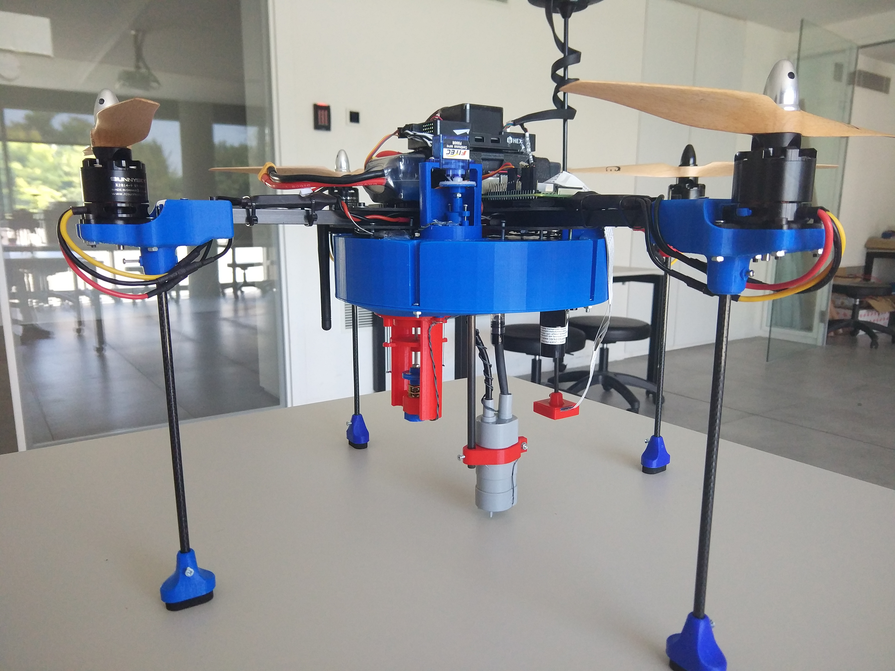

- Image processing, object detection
- Developing decision making algorithms using real-time flight data combined with the image processing
- Designing and manufacturing task-specific systems such as active air valve and discharging valve using a CAD software and 3D printers
- Developing task-specific electronic circuits such as water detection sensor and motor driver
- Aerodynamic analysis of a quadcopter
Bilal
Kabaş
Kabaş
BSc., Electrical-Electronics Engineering. Undergraduate Robotics Researcher.
June 2020 – Present
Autonomous UAV Development
Topics
TUBITAK UAV Competition
Robotics
Autonomous Flight
Python
OpenCV
Aerospace
Mechanical Design

In this project, the aim is to develop a quadcopter that can accomplish some specific tasks autonomously within the scope of the 5th TUBITAK International UAV Competition. The vehicle needs to detect a red circular area where image processing comes into play. Then, it needs to take some water from a certain area and carry it to this red circular area. Finally, it needs to discharge the water there. I took responsibilities in design, production, analysis, and software development phases of the project. I designed the frame and subsystems required for the task by using Solidworks. I did aerodynamic analyses based on the relevant literature and online tools. I played a role in the electronic integration phase. I have been also responsible for the development of the autonomous software where the real-time flight data is handled, and image processing is required. In the software development phase, OpenCV library has been used in Python. The summary of the roles that I have taken is:
Mar 2020 – Apr 2020
Comparative Analysis of Full Adders
Topics
MOSFETs
Digital Design
Circuit Simulation
Circuit Analysis
In this research, I compared an existing full adder circuit with the fully complementary standard CMOS circuit. After adapting for BS170 and BS250 MOS transistors, I built both circuits in LTSpice to simulate them. I used LTSpice commands to find out propagation delays and power dissipations. The simulation was conducted over 16 different input combinations. After obtaining these data, I came up with a comparison. I also built the full adder circuit on breadboard. In this research, I gained a deep understanding of MOS transistors and logic gates. I authored an academic article about this research.
Links: ResearchGate, GitHub
Links: ResearchGate, GitHub
Oct 2019 – Jan 2020
ECG Signal Acquisition and Data Processing
Topics
ECG Analysis
Filtering
Software Development
 The aim of the project is to acquire ECG signals from the human body in real-time and to obtain average BPM value, R-R tachogram and power spectral density (PSD) graphs through peak detection. ECG signals, which are acquired by means of electrodes and leads, are preprocessed in a circuit including an instrumentation amplifier, a capacitor for linearization purposes and an active low-pass filter. After preprocessing, these signals are transmitted to an analog-to-digital converter communicating with a computer via a Bluetooth module. In the software, these signals can be monitored in real-time along with the FFT (Fast Fourier Transform). The software also offers some filtering types that can be implemented on these signals in real-time. Real-time signals can be recorded for post-processing. Post-processing encompasses calculation of average BPM, R-R tachogram and power spectral density analysis through peak detection.
The aim of the project is to acquire ECG signals from the human body in real-time and to obtain average BPM value, R-R tachogram and power spectral density (PSD) graphs through peak detection. ECG signals, which are acquired by means of electrodes and leads, are preprocessed in a circuit including an instrumentation amplifier, a capacitor for linearization purposes and an active low-pass filter. After preprocessing, these signals are transmitted to an analog-to-digital converter communicating with a computer via a Bluetooth module. In the software, these signals can be monitored in real-time along with the FFT (Fast Fourier Transform). The software also offers some filtering types that can be implemented on these signals in real-time. Real-time signals can be recorded for post-processing. Post-processing encompasses calculation of average BPM, R-R tachogram and power spectral density analysis through peak detection.
Links: GitHub